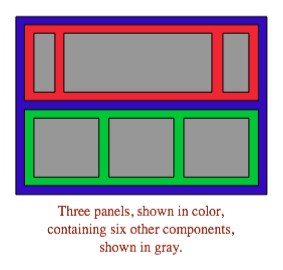
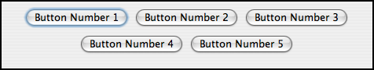
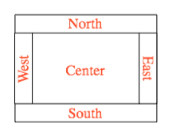
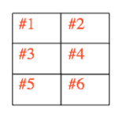
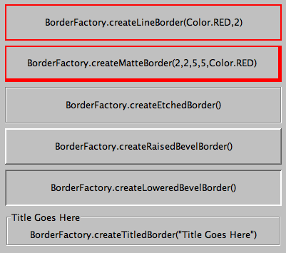

Section 6.7
Basic Layout
Components are the fundamental building blocks of a graphical user interface. But you have to do more with components besides create them. Another aspect of GUI programming is laying out components on the screen, that is, deciding where they are drawn and how big they are. You have probably noticed that computing coordinates can be a difficult problem, especially if you don't assume a fixed size for the drawing area. Java has a solution for this, as well.
Components are the visible objects that make up a GUI. Some components are containers, which can hold other components. Containers in Java are objects that belong to some subclass of java.awt.Container. The content pane of a JApplet or JFrame is an example of a container. The standard class JPanel, which we have mostly used as a drawing surface up till now, is another example of a container.
Because a JPanel object is a container, it can hold other components. Because a JPanel is itself a component, you can add a JPanel to another JPanel. This makes complex nesting of components possible. JPanels can be used to organize complicated user interfaces, as shown in this illustration:

The components in a container must be "laid out," which means setting their sizes and positions. It's possible to program the layout yourself, but ordinarily layout is done by a layout manager. A layout manager is an object associated with a container that implements some policy for laying out the components in that container. Different types of layout manager implement different policies. In this section, we will cover the three most common types of layout manager, and then we will look at several programming examples that use components and layout.
Every container has an instance method, setLayout(), that takes a parameter of type LayoutManager and that is used to specify the layout manager that will be responsible for laying out any components that are added to the container. Components are added to a container by calling an instance method named add() in the container object. There are actually several versions of the add() method, with different parameter lists. Different versions of add() are appropriate for different layout managers, as we will see below.
6.7.1 Basic Layout Managers
Java has a variety of standard layout managers that can be used as parameters in the setLayout() method. They are defined by classes in the package java.awt. Here, we will look at just three of these layout manager classes: FlowLayout, BorderLayout, and GridLayout.
A FlowLayout simply lines up components in a row across the container. The size of each component is equal to that component's "preferred size." After laying out as many items as will fit in a row across the container, the layout manager will move on to the next row. The default layout for a JPanel is a FlowLayout; that is, a JPanel uses a FlowLayout unless you specify a different layout manager by calling the panel's setLayout() method.
The components in a given row can be either left-aligned, right-aligned, or centered within that row, and there can be horizontal and vertical gaps between components. If the default constructor, "new FlowLayout()", is used, then the components on each row will be centered and both the horizontal and the vertical gaps will be five pixels. The constructor
public FlowLayout(int align, int hgap, int vgap)
can be used to specify alternative alignment and gaps. The possible values of align are FlowLayout.LEFT, FlowLayout.RIGHT, and FlowLayout.CENTER.
Suppose that cntr is a container object that is using a FlowLayout as its layout manager. Then, a component, comp, can be added to the container with the statement
cntr.add(comp);
The FlowLayout will line up all the components that have been added to the container in this way. They will be lined up in the order in which they were added. For example, this picture shows five buttons in a panel that uses a FlowLayout:

Note that since the five buttons will not fit in a single row across the panel, they are arranged in two rows. In each row, the buttons are grouped together and are centered in the row. The buttons were added to the panel using the statements:
panel.add(button1); panel.add(button2); panel.add(button3); panel.add(button4); panel.add(button5);
When a container uses a layout manager, the layout manager is ordinarily responsible for computing the preferred size of the container (although a different preferred size could be set by calling the container's setPreferredSize method). A FlowLayout prefers to put its components in a single row, so the preferred width is the total of the preferred widths of all the components, plus the horizontal gaps between the components. The preferred height is the maximum preferred height of all the components.
A BorderLayout layout manager is designed to display one large, central component, with up to four smaller components arranged along the edges of the central component. If a container, cntr, is using a BorderLayout, then a component, comp, should be added to the container using a statement of the form
cntr.add( comp, borderLayoutPosition );
where borderLayoutPosition specifies what position the component should occupy in the layout and is given as one of the constants BorderLayout.CENTER, BorderLayout.NORTH, BorderLayout.SOUTH, BorderLayout.EAST, or BorderLayout.WEST. The meaning of the five positions is shown in this diagram:

Note that a border layout can contain fewer than five components, so that not all five of the possible positions need to be filled.
A BorderLayout selects the sizes of its components as follows: The NORTH and SOUTH components (if present) are shown at their preferred heights, but their width is set equal to the full width of the container. The EAST and WEST components are shown at their preferred widths, but their height is set to the height of the container, minus the space occupied by the NORTH and SOUTH components. Finally, the CENTER component takes up any remaining space; the preferred size of the CENTER component is completely ignored. You should make sure that the components that you put into a BorderLayout are suitable for the positions that they will occupy. A horizontal slider or text field, for example, would work well in the NORTH or SOUTH position, but wouldn't make much sense in the EAST or WEST position.
The default constructor, new BorderLayout(), leaves no space between components. If you would like to leave some space, you can specify horizontal and vertical gaps in the constructor of the BorderLayout object. For example, if you say
panel.setLayout(new BorderLayout(5,7));
then the layout manager will insert horizontal gaps of 5 pixels between components and vertical gaps of 7 pixels between components. The background color of the container will show through in these gaps. The default layout for the original content pane that comes with a JFrame or JApplet is a BorderLayout with no horizontal or vertical gap.
Finally, we consider the GridLayout layout manager. A grid layout lays out components in a grid of equal sized rectangles. This illustration shows how the components would be arranged in a grid layout with 3 rows and 2 columns:

If a container uses a GridLayout, the appropriate add method for the container takes a single parameter of type Component (for example: cntr.add(comp)). Components are added to the grid in the order shown; that is, each row is filled from left to right before going on the next row.
The constructor for a GridLayout takes the form "new GridLayout(R,C)", where R is the number of rows and C is the number of columns. If you want to leave horizontal gaps of H pixels between columns and vertical gaps of V pixels between rows, use "new GridLayout(R,C,H,V)" instead.
When you use a GridLayout, it's probably good form to add just enough components to fill the grid. However, this is not required. In fact, as long as you specify a non-zero value for the number of rows, then the number of columns is essentially ignored. The system will use just as many columns as are necessary to hold all the components that you add to the container. If you want to depend on this behavior, you should probably specify zero as the number of columns. You can also specify the number of rows as zero. In that case, you must give a non-zero number of columns. The system will use the specified number of columns, with just as many rows as necessary to hold the components that are added to the container.
Horizontal grids, with a single row, and vertical grids, with a single column, are very common. For example, suppose that button1, button2, and button3 are buttons and that you'd like to display them in a horizontal row in a panel. If you use a horizontal grid for the panel, then the buttons will completely fill that panel and will all be the same size. The panel can be created as follows:
JPanel buttonBar = new JPanel();
buttonBar.setLayout( new GridLayout(1,3) );
// (Note: The "3" here is pretty much ignored, and
// you could also say "new GridLayout(1,0)".
// To leave gaps between the buttons, you could use
// "new GridLayout(1,0,5,5)".)
buttonBar.add(button1);
buttonBar.add(button2);
buttonBar.add(button3);
You might find this button bar to be more attractive than the one that uses the default FlowLayout layout manager.
6.7.2 Borders
We have seen how to leave gaps between the components in a container, but what if you would like to leave a border around the outside of the container? This problem is not handled by layout managers. Instead, borders in Swing are represented by objects. A Border object can be added to any JComponent, not just to containers. Borders can be more than just empty space. The class javax.swing.BorderFactory contains a large number of static methods for creating border objects. For example, the function
BorderFactory.createLineBorder(Color.BLACK)
returns an object that represents a one-pixel wide black line around the outside of a component. If comp is a JComponent, a border can be added to comp using its setBorder() method. For example:
comp.setBorder( BorderFactory.createLineBorder(Color.BLACK) );
When a border has been set for a JComponent, the border is drawn automatically, without any further effort on the part of the programmer. The border is drawn along the edges of the component, just inside its boundary. The layout manager of a JPanel or other container will take the space occupied by the border into account. The components that are added to the container will be displayed in the area inside the border. I don't recommend using a border on a JPanel that is being used as a drawing surface. However, if you do this, you should take the border into account. If you draw in the area occupied by the border, that part of your drawing will be covered by the border.
Here are some of the static methods that can be used to create borders:
- BorderFactory.createEmptyBorder(top,left,bottom,right) -- leaves an empty border around the edges of a component. Nothing is drawn in this space, so the background color of the component will appear in the area occupied by the border. The parameters are integers that give the width of the border along the top, left, bottom, and right edges of the component. This is actually very useful when used on a JPanel that contains other components. It puts some space between the components and the edge of the panel. It can also be useful on a JLabel, which otherwise would not have any space between the text and the edge of the label.
- BorderFactory.createLineBorder(color,thickness) -- draws a line around all four edges of a component. The first parameter is of type Color and specifies the color of the line. The second parameter is an integer that specifies the thickness of the border. If the second parameter is omitted, a line of thickness 1 is drawn.
- BorderFactory.createMatteBorder(top,left,bottom,right,color) -- is similar to createLineBorder, except that you can specify individual thicknesses for the top, left, bottom, and right edges of the component.
- BorderFactory.createEtchedBorder() -- creates a border that looks like a groove etched around the boundary of the component. The effect is achieved using lighter and darker shades of the component's background color, and it does not work well with every background color.
- BorderFactory.createLoweredBevelBorder() -- gives a component a three-dimensional effect that makes it look like it is lowered into the computer screen. As with an EtchedBorder, this only works well for certain background colors.
- BorderFactory.createRaisedBevelBorder() -- similar to a LoweredBevelBorder, but the component looks like it is raised above the computer screen.
- BorderFactory.createTitledBorder(title) -- creates a border with a title. The title is a String, which is displayed in the upper left corner of the border.
There are many other methods in the BorderFactory class, most of them providing variations of the basic border styles given here. The following illustration shows six components with six different border styles. The text in each component is the command that created the border for that component:

(The source code for the applet that produced this picture can be found in BorderDemo.java.)
6.7.3 SliderAndComboBoxDemo
Now that we have looked at components and layouts, it's time to put them together into some complete programs. We start with a simple demo that uses a JLabel, a JComboBox, and a couple of JSliders, all laid out in a GridLayout:
The sliders in this applet control the foreground and background color of the label, and the combo box controls its font style. Writing this program is a matter of creating the components, laying them out, and programming listeners to respond to events from the sliders and combo box. In my program, I define a subclass of JPanel which will be used for the applet's content pane. This class implements ChangeListener and ActionListener, so the panel itself can act as the listener for change events from the sliders and action events from the combo box. In the constructor, the four components are created and configured, a GridLayout is installed as the layout manager for the panel, and the components are added to the panel:
/* Create the sliders, and set up this panel to listen for
ChangeEvents that are generated by the sliders. */
bgColorSlider = new JSlider(0,255,100);
bgColorSlider.addChangeListener(this);
fgColorSlider = new JSlider(0,255,200);
fgColorSlider.addChangeListener(this);
/* Create the combo box, and add four items to it, listing
different font styles. Set up the panel to listen for
ActionEvents from the combo box. */
fontStyleSelect = new JComboBox();
fontStyleSelect.addItem("Plain Font");
fontStyleSelect.addItem("Italic Font");
fontStyleSelect.addItem("Bold Font");
fontStyleSelect.addItem("Bold Italic Font");
fontStyleSelect.setSelectedIndex(2);
fontStyleSelect.addActionListener(this);
/* Create the display label, with properties to match the
values of the sliders and the setting of the combo box. */
displayLabel = new JLabel("Hello World!", JLabel.CENTER);
displayLabel.setOpaque(true);
displayLabel.setBackground( new Color(100,100,100) );
displayLabel.setForeground( new Color(255, 200, 200) );
displayLabel.setFont( new Font("Serif", Font.BOLD, 30) );
/* Set the layout for the panel, and add the four components.
Use a GridLayout with 4 rows and 1 column. */
setLayout(new GridLayout(4,1));
add(displayLabel);
add(bgColorSlider);
add(fgColorSlider);
add(fontStyleSelect);
The class also defines the methods required by the ActionListener and ChangeListener interfaces. The actionPerformed() method is called when the user selects an item in the combo box. This method changes the font in the JLabel, where the font depends on which item is currently selected in the combo box, fontStyleSelect:
public void actionPerformed(ActionEvent evt) {
switch ( fontStyleSelect.getSelectedIndex() ) {
case 0:
displayLabel.setFont( new Font("Serif", Font.PLAIN, 30) );
break;
case 1:
displayLabel.setFont( new Font("Serif", Font.ITALIC, 30) );
break;
case 2:
displayLabel.setFont( new Font("Serif", Font.BOLD, 30) );
break;
case 3:
displayLabel.setFont( new Font("Serif", Font.BOLD + Font.ITALIC, 30) );
break;
}
}
And the stateChanged() method, which is called when the user manipulates one of the sliders, uses the value on the slider to compute a new foreground or background color for the label. The method checks evt.getSource() to determine which slider was changed:
public void stateChanged(ChangeEvent evt) {
if (evt.getSource() == bgColorSlider) {
int bgVal = bgColorSlider.getValue();
displayLabel.setBackground( new Color(bgVal,bgVal,bgVal) );
// NOTE: The background color is a shade of gray,
// determined by the setting on the slider.
}
else {
int fgVal = fgColorSlider.getValue();
displayLabel.setForeground( new Color( 255, fgVal, fgVal) );
// Note: The foreground color ranges from pure red to pure
// white as the slider value increases from 0 to 255.
}
}
(The complete source code is in the file SliderAndComboBoxDemo.java.)
6.7.4 A Simple Calculator
As our next example, we look briefly at an example that uses nested subpanels to build a more complex user interface. The program has two JTextFields where the user can enter two numbers, four JButtons that the user can click to add, subtract, multiply, or divide the two numbers, and a JLabel that displays the result of the operation:
Like the previous example, this example uses a main panel with a GridLayout that has four rows and one column. In this case, the layout is created with the statement:
setLayout(new GridLayout(4,1,3,3));
which allows a 3-pixel gap between the rows where the gray background color of the panel is visible. The gray border around the edges of the panel is added with the statement
setBorder( BorderFactory.createEmptyBorder(5,5,5,5) );
The first row of the grid layout actually contains two components, a JLabel displaying the text "x =" and a JTextField. A grid layout can only only have one component in each position. In this case, that component is a JPanel, a subpanel that is nested inside the main panel. This subpanel in turn contains the label and text field. This can be programmed as follows:
xInput = new JTextField("0", 10); // Create a text field sized to hold 10 chars.
JPanel xPanel = new JPanel(); // Create the subpanel.
xPanel.add( new JLabel(" x = ")); // Add a label to the subpanel.
xPanel.add(xInput); // Add the text field to the subpanel
mainPanel.add(xPanel); // Add the subpanel to the main panel.
The subpanel uses the default FlowLayout layout manager, so the label and text field are simply placed next to each other in the subpanel at their preferred size, and are centered in the subpanel.
Similarly, the third row of the grid layout is a subpanel that contains four buttons. In this case, the subpanel uses a GridLayout with one row and four columns, so that the buttons are all the same size and completely fill the subpanel.
One other point of interest in this example is the actionPerformed() method that responds when the user clicks one of the buttons. This method must retrieve the user's numbers from the text field, perform the appropriate arithmetic operation on them (depending on which button was clicked), and set the text of the label to represent the result. However, the contents of the text fields can only be retrieved as strings, and these strings must be converted into numbers. If the conversion fails, the label is set to display an error message:
public void actionPerformed(ActionEvent evt) {
double x, y; // The numbers from the input boxes.
try {
String xStr = xInput.getText();
x = Double.parseDouble(xStr);
}
catch (NumberFormatException e) {
// The string xStr is not a legal number.
answer.setText("Illegal data for x.");
xInput.requestFocus();
return;
}
try {
String yStr = yInput.getText();
y = Double.parseDouble(yStr);
}
catch (NumberFormatException e) {
// The string yStr is not a legal number.
answer.setText("Illegal data for y.");
yInput.requestFocus();
return;
}
/* Perfrom the operation based on the action command from the
button. The action command is the text displayed on the button.
Note that division by zero produces an error message. */
String op = evt.getActionCommand();
if (op.equals("+"))
answer.setText( "x + y = " + (x+y) );
else if (op.equals("-"))
answer.setText( "x - y = " + (x-y) );
else if (op.equals("*"))
answer.setText( "x * y = " + (x*y) );
else if (op.equals("/")) {
if (y == 0)
answer.setText("Can't divide by zero!");
else
answer.setText( "x / y = " + (x/y) );
}
} // end actionPerformed()
(The complete source code for this example can be found in SimpleCalc.java.)
6.7.5 Using a null Layout
As mentioned above, it is possible to do without a layout manager altogether. For out next example, we'll look at a panel that does not use a layout manager. If you set the layout manager of a container to be null, by calling container.setLayout(null), then you assume complete responsibility for positioning and sizing the components in that container.
If comp is any component, then the statement
comp.setBounds(x, y, width, height);
puts the top left corner of the component at the point (x,y), measured in the coordinate system of the container that contains the component, and it sets the width and height of the component to the specified values. You should only set the bounds of a component if the container that contains it has a null layout manager. In a container that has a non-null layout manager, the layout manager is responsible for setting the bounds, and you should not interfere with its job.
Assuming that you have set the layout manager to null, you can call the setBounds() method any time you like. (You can even make a component that moves or changes size while the user is watching.) If you are writing a panel that has a known, fixed size, then you can set the bounds of each component in the panel's constructor. Note that you must also add the components to the panel, using the panel's add(component) instance method; otherwise, the component will not appear on the screen.
Our example contains four components: two buttons, a label, and a panel that displays a checkerboard pattern:
This is just an example of using a null layout; it doesn't do anything, except that clicking the buttons changes the text of the label. (We will use this example in Section 7.5 as a starting point for a checkers game.)
For its content pane, this example uses a main panel that is defined by a class named NullLayoutPanel. The four components are created and added to the panel in the constructor of the NullLayoutPanel class. Then the setBounds() method of each component is called to set the size and position of the component:
public NullLayoutPanel() {
setLayout(null); // I will do the layout myself!
setBackground(new Color(0,150,0)); // A dark green background.
setBorder( BorderFactory.createEtchedBorder() );
setPreferredSize( new Dimension(350,240) );
// I assume that the size of the panel is, in fact, 350-by-240.
/* Create the components and add them to the content pane. If you
don't add them to the a container, they won't appear, even if
you set their bounds! */
board = new Checkerboard();
// (Checkerborad is a subclass of JPanel, defined elsewhere.)
add(board);
newGameButton = new JButton("New Game");
newGameButton.addActionListener(this);
add(newGameButton);
resignButton = new JButton("Resign");
resignButton.addActionListener(this);
add(resignButton);
message = new JLabel("Click \"New Game\" to begin a game.");
message.setForeground( new Color(100,255,100) ); // Light green.
message.setFont(new Font("Serif", Font.BOLD, 14));
add(message);
/* Set the position and size of each component by calling
its setBounds() method. */
board.setBounds(20,20,164,164);
newGameButton.setBounds(210, 60, 120, 30);
resignButton.setBounds(210, 120, 120, 30);
message.setBounds(20, 200, 330, 30);
} // end constructor
It's reasonably easy, in this case, to get an attractive layout. It's much more difficult to do your own layout if you want to allow for changes of size. In that case, you have to respond to changes in the container's size by recomputing the sizes and positions of all the components that it contains. If you want to respond to changes in a container's size, you can register an appropriate listener with the container. Any component generates an event of type ComponentEvent when its size changes (and also when it is moved, hidden, or shown). You can register a ComponentListener with the container and respond to size change events by recomputing the sizes and positions of all the components in the container. Consult a Java reference for more information about ComponentEvents. However, my real advice is that if you want to allow for changes in the container's size, try to find a layout manager to do the work for you.
(The complete source code for this example is in NullLayoutDemo.java.)
6.7.6 A Little Card Game
For a final example, let's look at something a little more interesting as a program. The example is a simple card game in which you look at a playing card and try to predict whether the next card will be higher or lower in value. (Aces have the lowest value in this game.) You've seen a text-oriented version of the same game in Subsection 5.4.3. Section 5.4 also introduced Deck, Hand, and Card classes that are used in the game program. In this GUI version of the game, you click on a button to make your prediction. If you predict wrong, you lose. If you make three correct predictions, you win. After completing one game, you can click the "New Game" button to start a new game. Try it! See what happens if you click on one of the buttons at a time when it doesn't make sense to do so.
The complete source code for this example is in the file HighLowGUI.java.
The overall structure of the main panel in this example should be clear: It has three buttons in a subpanel at the bottom of the main panel and a large drawing surface that displays the cards and a message. The main panel uses a BorderLayout. The drawing surface occupies the CENTER position of the border layout. The subpanel that contains the buttons occupies the SOUTH position of the border layout, and the other three positions of the layout are empty.
The drawing surface is defined by a nested class named CardPanel, which is a subclass of JPanel. I have chosen to let the drawing surface object do most of the work of the game: It listens for events from the three buttons and responds by taking the appropriate actions. The main panel is defined by HighLowGUI itself, which is another subclass of JPanel. The constructor of the HighLowGUI class creates all the other components, sets up event handling, and lays out the components:
public HighLowGUI() { // The constructor.
setBackground( new Color(130,50,40) );
setLayout( new BorderLayout(3,3) ); // BorderLayout with 3-pixel gaps.
CardPanel board = new CardPanel(); // Where the cards are drawn.
add(board, BorderLayout.CENTER);
JPanel buttonPanel = new JPanel(); // The subpanel that holds the buttons.
buttonPanel.setBackground( new Color(220,200,180) );
add(buttonPanel, BorderLayout.SOUTH);
JButton higher = new JButton( "Higher" );
higher.addActionListener(board); // The CardPanel listens for events.
buttonPanel.add(higher);
JButton lower = new JButton( "Lower" );
lower.addActionListener(board);
buttonPanel.add(lower);
JButton newGame = new JButton( "New Game" );
newGame.addActionListener(board);
buttonPanel.add(newGame);
setBorder(BorderFactory.createLineBorder( new Color(130,50,40), 3) );
} // end constructor
The programming of the drawing surface class, CardPanel, is a nice example of thinking in terms of a state machine. (See Subsection 6.5.4.) It is important to think in terms of the states that the game can be in, how the state can change, and how the response to events can depend on the state. The approach that produced the original, text-oriented game in Subsection 5.4.3 is not appropriate here. Trying to think about the game in terms of a process that goes step-by-step from beginning to end is more likely to confuse you than to help you.
The state of the game includes the cards and the message. The cards are stored in an object of type Hand. The message is a String. These values are stored in instance variables. There is also another, less obvious aspect of the state: Sometimes a game is in progress, and the user is supposed to make a prediction about the next card. Sometimes we are between games, and the user is supposed to click the "New Game" button. It's a good idea to keep track of this basic difference in state. The CardPanel class uses a boolean instance variable named gameInProgress for this purpose.
The state of the game can change whenever the user clicks on a button. The CardPanel class implements the ActionListener interface and defines an actionPerformed() method to respond to the user's clicks. This method simply calls one of three other methods, doHigher(), doLower(), or newGame(), depending on which button was pressed. It's in these three event-handling methods that the action of the game takes place.
We don't want to let the user start a new game if a game is currently in progress. That would be cheating. So, the response in the newGame() method is different depending on whether the state variable gameInProgress is true or false. If a game is in progress, the message instance variable should be set to show an error message. If a game is not in progress, then all the state variables should be set to appropriate values for the beginning of a new game. In any case, the board must be repainted so that the user can see that the state has changed. The complete newGame() method is as follows:
/**
* Called by the CardPanel constructor, and called by actionPerformed() if
* the user clicks the "New Game" button. Start a new game.
*/
void doNewGame() {
if (gameInProgress) {
// If the current game is not over, it is an error to try
// to start a new game.
message = "You still have to finish this game!";
repaint();
return;
}
deck = new Deck(); // Create the deck and hand to use for this game.
hand = new Hand();
deck.shuffle();
hand.addCard( deck.dealCard() ); // Deal the first card into the hand.
message = "Is the next card higher or lower?";
gameInProgress = true;
repaint();
} // end doNewGame()
The doHigher() and doLower() methods are almost identical to each other (and could probably have been combined into one method with a parameter, if I were more clever). Let's look at the doHigher() routine. This is called when the user clicks the "Higher" button. This only makes sense if a game is in progress, so the first thing doHigher() should do is check the value of the state variable gameInProgress. If the value is false, then doHigher() should just set up an error message. If a game is in progress, a new card should be added to the hand and the user's prediction should be tested. The user might win or lose at this time. If so, the value of the state variable gameInProgress must be set to false because the game is over. In any case, the board is repainted to show the new state. Here is the doHigher() method:
/**
* Called by actionPerformmed() when user clicks "Higher" button.
* Check the user's prediction. Game ends if user guessed
* wrong or if the user has made three correct predictions.
*/
void doHigher() {
if (gameInProgress == false) {
// If the game has ended, it was an error to click "Higher",
// So set up an error message and abort processing.
message = "Click \"New Game\" to start a new game!";
repaint();
return;
}
hand.addCard( deck.dealCard() ); // Deal a card to the hand.
int cardCt = hand.getCardCount();
Card thisCard = hand.getCard( cardCt - 1 ); // Card just dealt.
Card prevCard = hand.getCard( cardCt - 2 ); // The previous card.
if ( thisCard.getValue() < prevCard.getValue() ) {
gameInProgress = false;
message = "Too bad! You lose.";
}
else if ( thisCard.getValue() == prevCard.getValue() ) {
gameInProgress = false;
message = "Too bad! You lose on ties.";
}
else if ( cardCt == 4) {
gameInProgress = false;
message = "You win! You made three correct guesses.";
}
else {
message = "Got it right! Try for " + cardCt + ".";
}
repaint();
} // end doHigher()
The paintComponent() method of the CardPanel class uses the values in the state variables to decide what to show. It displays the string stored in the message variable. It draws each of the cards in the hand. There is one little tricky bit: If a game is in progress, it draws an extra face-down card, which is not in the hand, to represent the next card in the deck. Drawing the cards requires some care and computation. I wrote a method, "void drawCard(Graphics g, Card card, int x, int y)", which draws a card with its upper left corner at the point (x,y). The paintComponent() routine decides where to draw each card and calls this routine to do the drawing. You can check out all the details in the source code, HighLowGUI.java.
One further note on the programming of this example: The source code defines HighLowGUI as a subclass of JPanel. The class contains a main() routine so that it can be run as a stand-alone application; the main() routine simply opens a window that uses a panel of type HighLowGUI as its content pane. In addition, I decided to write an applet version of the program as a static nested class named Applet inside the HighLowGUI class. Since this is a nested class, its full name is HighLowGUI.Applet and the class file that is produced when the source code is compiled is named HighLowGUI$Applet.class. This class is used for the applet version of the program shown above. The <applet> tag lists the class file for the applet as code="HighLowGUI$Applet.class". This is admittedly an unusual way to organize the program, and it is probably more natural to have the panel, applet, and stand-alone program defined in separate classes. However, writing the program in this way does show the flexibility of Java classes. (Nested classes were discussed in Subsection 5.7.2.)